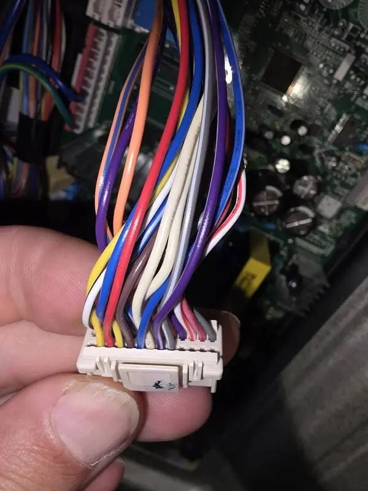

LG Refrigerator Repair: Common Warning Signs You Should Never Ignore
Modern LG refrigerators are designed with advanced cooling systems, smart electronic controls, inverter compressors, and energy efficient components that help maintain consistent temperatures and reliable food preservation. However, even high quality refrigerators can begin developing performance issues over time. Recognizing early warning signs can help homeowners avoid major appliance breakdowns, expensive repairs, and food spoilage.
One of the most common warning signs homeowners notice is inconsistent cooling performance. An LG refrigerator that suddenly struggles to maintain temperature may have airflow restrictions, evaporator fan motor problems, failing sensors, frost buildup, or compressor related issues. In some situations, the refrigerator compartment may feel warm while the freezer continues operating normally. In other cases, both sections may slowly lose cooling performance over several days.

Unusual noises are another important sign that professional LG refrigerator repair may be needed. Clicking sounds, loud humming, buzzing noises, vibrating panels, or repeated compressor cycling can indicate developing mechanical or electrical problems inside the refrigerator. Many homeowners ignore these sounds initially, but early diagnostics can often help prevent additional component failures and reduce repair costs.
Water leaks around the refrigerator should also never be ignored. Leaking water may result from clogged defrost drains, frozen drain lines, damaged water valves, cracked drain pans, or ice maker system failures. Over time, excess moisture can damage kitchen flooring, surrounding cabinets, and refrigerator insulation. Professional LG refrigerator repair helps identify the source of the leak and restore proper refrigerator operation safely and efficiently.
Ice maker problems are another common issue experienced by many LG refrigerator owners. Slow ice production, small ice cubes, frozen water lines, leaking dispensers, or complete ice maker failure may indicate water supply restrictions, faulty inlet valves, damaged sensors, or electronic communication problems. Modern LG refrigerators rely on multiple interconnected systems that must operate together correctly to maintain proper ice production.
Many newer LG refrigerators use advanced linear compressor systems that require specialized diagnostics and repair procedures. Compressor related problems may create temperature instability, unusual noises, excessive runtime, or complete cooling failure. Because modern refrigerator cooling systems are highly technical, accurate diagnostics are extremely important before replacing components unnecessarily.
Electronic control systems also play a major role in modern refrigerator performance. Faulty control boards, temperature sensors, smart communication systems, or damaged wiring can cause error codes, cooling interruptions, fan failures, and unstable freezer temperatures. Proper LG refrigerator repair focuses on identifying the root cause of the problem instead of replacing parts through trial and error.
Preventive maintenance can also help reduce the risk of major refrigerator problems. Cleaning condenser coils, replacing water filters, inspecting door gaskets, and monitoring unusual temperature changes may help improve refrigerator performance and reduce stress on internal cooling components. Homeowners who respond quickly to early warning signs often avoid larger and more expensive appliance repairs later.
Professional LG refrigerator repair helps protect long term refrigerator reliability while restoring proper cooling performance for daily household use. Whether your refrigerator is leaking water, making unusual noises, failing to cool properly, or showing electronic error codes, timely diagnostics and professional repair service can help prevent additional appliance damage and restore dependable refrigerator operation.